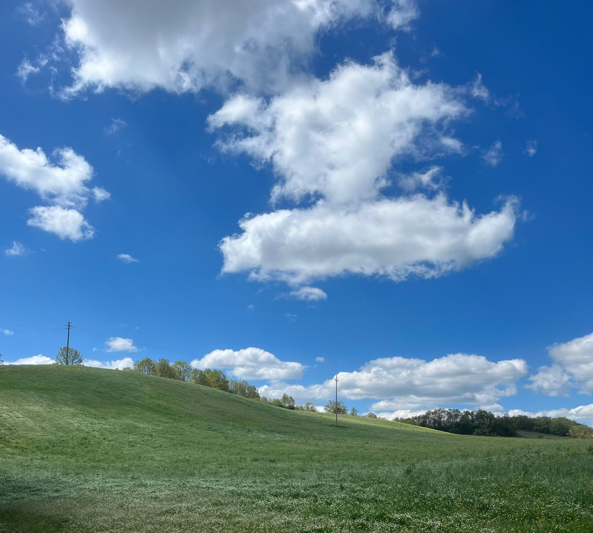
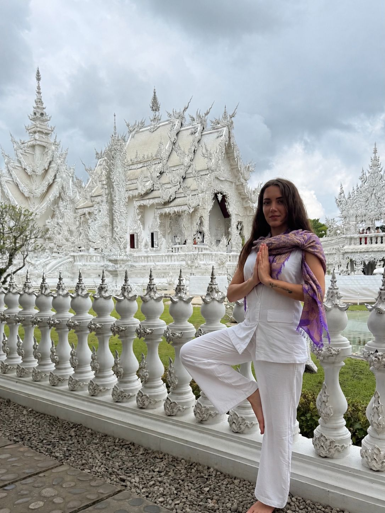
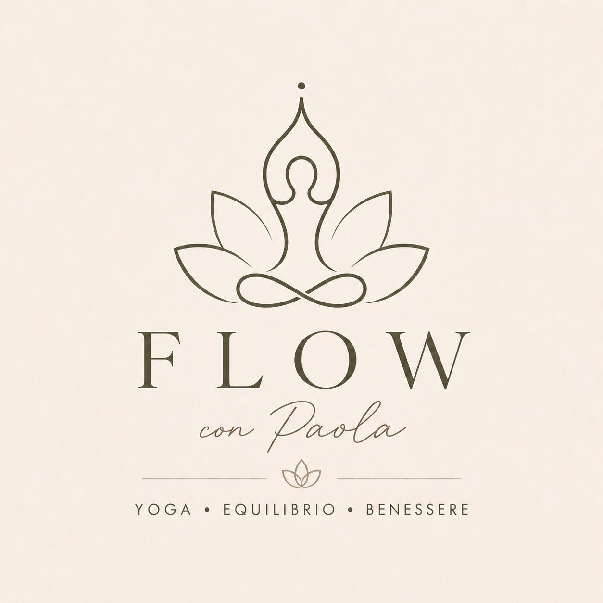
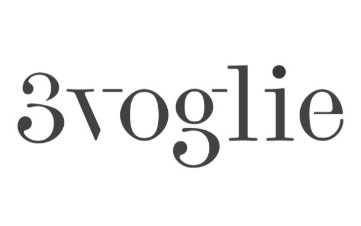

Google Developer Groups · Basilicata
DevForest 2026
DevFest Basilicata – Outdoor Edition
La Majonica, Basilicata
Una giornata all'aria aperta dove la tecnologia torna ad essere strumento — misurata su vincoli reali, costruita da mani diverse, dimostrata insieme.
DevFest in the woods:
meno conferenza, più esperienza.
Tre pilastri della giornata
Format ibrido tra track tradizionale, laboratori hands-on e rituali partecipativi (fishbowl, AI Mood Sprint, campfire).
Ospiti & roundtable
Profilo botanico / ambientalista
Feedback loop, sostenibilità, misura
Maker / IoT engineer
Edge, affidabilità sul campo
Cloud / Data engineer
Pipeline, osservabilità, sicurezza
Product / Community builder
Collaborazione, ownership, inclusione
Mattina: RoundTable fishbowl (3–4 ospiti + una sedia libera per il pubblico) sul tema «Dal bosco al cloud: costruire sistemi (e community) che reggono», con micro-storie e domande guida.
Programma
Yoga per salutare la DevFest (porta il tuo tappetino!) — Scopri di più
Registrazione partecipanti
Presentazione DevFest
5 talk tematici (Web, frontend, AI, cloud) + preparazione ai laboratori
Talk tecnici
Integration contract
Pranzo con Valentino Tafuri, master class di preparazione pizza ed il resto a seguire — Scopri di più
Build Sprint per gruppi — moduli collegati al prototipo comune
Integrazione «dal tutto all’UNO» + demo end-to-end
AI Mood Sprint — gioco partecipativo su percezioni AI
Campfire Talk — senza slide, intorno al fuoco: mentoring, retrospettiva, impegni AI
Cena alla brace + musica live — chiusura festival
Visione
DevFest Basilicata 2026 nasce per evolvere il format «solo talk» in un’esperienza partecipativa: contenuti non solo ascoltati, ma costruiti insieme. La location outdoor (bosco / spazio naturale) è un cambio di paradigma: più collaborazione autentica, tecnologia come strumento misurata su vincoli reali (energia, connettività, ambiente), format ibridi tra talk brevi, laboratori e momenti rituali come il campfire.
Restiamo GDG-consistenti: learning-by-doing, community-first, inclusione, responsible AI, mentalità aperta su modularità e integrazione — come metafora di come crescono progetti e community.
Outdoor
Hands-on
Responsible AI
Cosa rende questa DevFest diversa
Non solo un evento tech. Un cambio di formato, di mindset e di esperienza — coerente con i valori GDG.
Keynote monologo
RoundTable Fishbowl con sedia sempre aperta al pubblico
Talk da ascoltare passivamente
Mini-talk funzionali ai laboratori: contenuto strumentale, non autoreferenziale
Applausi e arrivederci
Build Sprint + demo end-to-end di un MVP reale costruito da tutti
Networking da buffet
Campfire Talk intorno al fuoco: mentoring, retrospettiva, impegni concreti
Sala conferenze anonima
Bosco e natura come parte attiva del contenuto, non solo scenografia
AI come argomento da palco
AI Mood Sprint: le tue percezioni diventano un artefatto visivo condiviso
Experience in Experience
Ospiti speciali che arricchiranno la DevFest con momenti unici.

Paola Rosa — Risveglio Yoga
08:00 – 08:30
Inizia la DevFest all'insegna del benessere con una sessione mattutina di Yoga immersi nella natura, guidata dalla maestra Paola Rosa.
⚠️ Nota: Ricordati assolutamente di portare il tuo tappetino personale!

Valentino Tafuri — Masterclass Pizza
13:00 – 14:30
Un'esperienza culinaria unica con il maestro pizzaiolo Valentino Tafuri (3 Voglie). Preparazione e infornamento in compagnia.
Programma dettagliato
Per dare un'occhiata alla roadmap ufficiale della giornata e non perderti nemmeno un talk o un panel, tieni d'occhio il sito ufficiale: devfest.gdgbasilicata.it.
Mattina — track mista
09:30 – 09:45 · Presentazione DevFest. Apertura dell'evento, overview della giornata e allineamento su obiettivi, format e integrazione tra i gruppi.
09:45 – 13:00 · Cinque talk tecnici
Formato circa 30’ + 3’ Q&A. Un talk per ciascun gruppo di lavoro: concetti base, scelte tecniche, rischi tipici, lettura guidata delle specifiche dell’Integration Contract (schema JSON, unità di misura, frequenza, endpoint/MQTT, Definition of Done).
13:00 – 15:00 · Pranzo & master class pizza
Pranzo con Valentino Tafuri, master class di preparazione pizza ed il resto a seguire.
Sera & community
Dopo il laboratorio: Campfire Talk guidato (19:30 nel concept; marshmallow, cena alla brace, musica live e — in alternativa — pizza al forno a legna 20:00–22:00 per chi resta). Sessione senza slide: mentoring, retrospettiva, domande sul costruito insieme, attriti, impegno personale su AI (skill e guardrail).
Pomeriggio — laboratorio modulare
15:00 – 17:00 · Build Sprint. Gruppi su stand dedicati; check-in periodici «show me something» ogni 30–45’. Breve parte introduttiva con mini-talk funzionali ai lab (contenuto strumentale, basi e specifiche comuni).
💻 Missione Laboratori: Armatevi di PC! Se avete intenzione di smanettare nei nostri laboratori, ricordatevi il vostro computer portatile e, soprattutto, caricatelo al 100% a casa! Le prese di corrente ci sono, ma non sono infinite e non vorremmo vedere nessuno fare i duelli con i cavi di alimentazione! 🔌⚡🔋
16:30 – 17:30 · Integrazione
Due binari che convergono: A fisico (botanica + IoT: sensori e payload) e B digitale (cloud + app: endpoint e dashboard), poi merge. 17:10 – 17:30 demo end-to-end: 3’ per modulo, 5’ demo completa, 5’ «what we learned».
17:30 – 18:00 · AI Mood Sprint / AI Camp Check-in
Gioco veloce: card con tre prompt (es. entusiasmo, paura concreta, skill da allenare nel 2026; opzione guardrail team). Pensieri brevi (8–10 parole), token/sticker, premio a completamento; output: muro dei pensieri e insight per il talk serale.
Il cuore del progetto: cosa costruiamo
Artefatto condiviso (MVP ad alta resa): smart planter / micro-serra modulare — vaso o contenitore intelligente con sensori (umidità, temperatura, luce) che invia dati resi visibili e interpretabili tramite app e cloud.
Gruppi e deliverable
Botanica — piante robuste, soglie, scelta sensori, lettura «bio» dei segnali.
Elettronica / IoT — controller, firmware, lettura sensori, calibrazione, invio dati
(MQTT/HTTP).
Stampa 3D / Fab — contenitore, passacavi, supporti, protezioni, montaggio
field-ready.
Web / App + AI — dashboard live, storico, alert; assistant che traduce dati in
consigli (prompt guidati / guardrail).
Cloud & Data — ingestion, storage time-series, API, osservabilità minima,
sicurezza di base.
Integration Contract
Per integrare sul serio, ogni modulo ha interfacce definite: schema payload, unità, nomi campi, frequenza, endpoint o topic MQTT, Definition of Done. Obiettivo: evitare che «ognuno lavora bene ma non si integra».
Momento clou
Riunione finale per assemblaggio e demo: prototipo funzionante, simile a un mini-hackathon con output unico condiviso da tutta la community.
Call interna (GDG friends)
Dai una mano: in quale gruppo vorresti stare (botanica, IoT, 3D, app+AI, cloud)? Hai idee per ospiti roundtable o per rendere il gioco AI ancora più coinvolgente?
Location, logistica e partecipanti
Spazio outdoor con servizi; piani meteo alternativi; target di presenza e trasporti.
La Majonica — Basilicata
La nostra sede è La Majonica, uno spazio naturale immerso nel paesaggio lucano. La location non è solo scenografia: è parte attiva del contenuto, un ambiente che favorisce collaborazione autentica e conversazioni vere.
Formato e numeri
Target indicativo: 100–120 partecipanti (oltre volontari e speaker). Non è un formato da «numeri enormi», ma coerente con le aspettative degli ultimi anni e con un’esperienza curata.
Talk e copertura
Spazio esterno coperto (es. galleria) per sessioni mattutine più tradizionali, con monitor e impianto audio. Prevista location secondaria in caso di meteo avversa (attivazione con pochi giorni di anticipo sulle previsioni).
Servizi in location
Connettività, corrente per laptop, acqua potabile, gas, servizi igienici a norma — da confermare in sede di scouting definitivo.
Navette e pernottamento
Accesso esclusivo in navetta gratuita: il posto è meraviglioso, ma arrivarci può essere un po' un'impresa. Niente panico! Abbiamo organizzato un servizio navetta continuo, con partenza davanti al Bar 'Il Semaforo' (ecco la posizione esatta: Vedi su Google Maps). Potete lasciare comodamente la vostra auto nell'ampio parcheggio antistante. Vi preleviamo noi e vi riportiamo indietro!
Orari navetta: la prima navetta partirà alle 07:30 in punto. Successivamente, la navetta farà da spola continua verso la venue per garantire un arrivo ordinato e puntuale per l'intera durata dell'evento.
Supporto urgenze: sarà disponibile anche un PLUBER (auto dell'organizzazione) per eventuali urgenze o necessità ulteriori.
Chiusura: conferenza strutturata fin verso le 19:00; attività serali facoltative con navetta di ritorno verso l’hub. Convenzione albergo in valutazione (circa 1,2 km dall’hub, possibile fermata navetta).
· La Majonica, Basilicata
DevFest in the woods
Prenota il tuo posto!
Per evitare sprechi e assicurarci che ogni sedia trovi il suo ospite, chiediamo un piccolo contributo
simbolico di 5€ per la prenotazione del posto.
In cambio, pensiamo a tutto noi: il pranzo e le pause caffè sono inclusi nella quota!
Partner & Sponsor
Grazie ai nostri partner per aver reso possibile queste esperienze.

